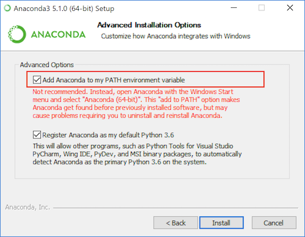

A Installing Python
Programmers use a variety of different software programs to write, manage, and execute code. Unfortunately, one of the most frustrating and confusing barriers to working with code is simply getting your machine properly set up. This chapter aims to provide sufficient information for setting up your machine and troubleshooting the process.
Python: a general purpose programming language, but one that is often used when working with data. This will be the primary programming language use in this book (though others will be discussed as well). “Installing Python” actually means installing tools that will let your computer understand and run Python code.
- Anaconda: is a distribution of the Python language, which includes a large number of additional add-on packages that we will be using (and can be difficult to install on their own). This is the recommended way of installing Python; we will be assuming that you have installed all of tools provided with the standard distribution.
The following sections have additional information about the purpose of each component, how to install it, and alternative configurations.
A.1 Python
The primary programming language used in this book is called Python. It’s a very powerful, general-purpose programming language that is “friendly” enough that it is often used for information and data sciences.
Important note: There are two different versions of Python that exist in the world: Python 2 (latest: 2.7) and Python 3 (latest: 3.10). While mostly similar, the newer Python 3 version added a few basic differences that make it incompatible with Python 2. But a lot of existing programs were slow to change over to Python 3, effectively causing two different versions to exist in active use (kind of like people not switching from Windows XP). Python 3 is considered the “current” version, with Python 2 being “legacy” and no longer being maintained.
In this book you will be working with Python 3. Thus you will want to make sure that you install Python 3, and that documentation and examples you reference are for Python 3 (rather than Python 2)!
In order to program with Python, you will need to install the Python Interpreter on your machine. This is a piece of software that is able to “read” code written in Python and use that code to control your computer, thereby “programming” it.
A.1.1 Anaconda
There are a number of ways to get Python installed on your machine: in fact, you may have a version (possibly Python 2) installed on your computer already! However, the recommended approach for programming for information and data science is to install Anaconda. Anaconda is a pre-packaged bundle of common Python tools and packages that are commonly used in data science—many of which we will be utilizing (including Jupyter for running interactive “notebooks”, and pandas for large-scale data work). And the best part: Anaconda makes it easy to get all the pieces installed and ready to use!
To install Anaconda (and Python along with it), simply download the Python 3.9 installer, run the executable, and follow the instructions. This should install Python and all the required packages.
If prompted, make sure that you select the option to “Add Anaconda to my PATH environment variable”. This will add a link to to Python that can be found by the command line (it will be on the “path” to applications), and will ensure that you can run Python code from within a command prompt.
Select to add Anaconda to the PATH variable.
A.2 Text Editors
In order to produce computer code, you need somewhere to write it (and we don’t want to write it in MS Word!) There are a variety of available programs that provide an interface for editing code. A major advantage of these programs is that they provide automatic formatting/coloring for easier interpretation of the code, along with cool features like auto-completion and integration with version control.
While Jupyter Notebooks provide a place to write and run Python code, you may also need to do programming that will run outside of that—and for that you need a coding text editor.
There are lots of different coding text editors out there, all of which have slightly different appearances and features. You only need to download and use one of the following programs (we recommend Visual Studio Code as a default), but feel free to try out different ones to find something you like (and then evangelize about it to your friends!)
Programming involves working with many different file types, each detailed by their extension. It is useful to specify that your computer should show these extensions in the File Explorer or Finder; see instructions for Windows or for Mac to enable this.
A.2.1 Visual Studio Code
Visual Studio Code (or VS Code; not to be confused with Visual Studio) is a free, open-source editor developed by Microsoft. While it focuses on web programming and JavaScript, it readily supports lots of languages including Python, and provides a number of community-built extensions for adding even more features. Although fairly new, it is updated regularly and has has become one of my main editors for programming.
To install VS Code, follow the above link and Click the “Download” button to download the installer (e.g, .exe) file, then double-click on that to install the application.
Once you’ve installed VS Code, the trick to using it effectively is to get comfortable with the Command Palette. If you hit Cmd+Shift+P, VS Code will open a small window where you can search for whatever you want the editor to do. For example, if you type in markdown you can get list of commands related to Markdown files (including the ability to open up a preview).
- While VS Code can handle Python code just fine out of the box, to be most effective when writing code you’ll want to add an extension with additional Python support. You should be prompted to install this the first time you open a
.pyPython script file. You can also install it by using the command-palette (open it up and type"extension"to find the “Install Extensions” option). Note that you can disable the pervasive “style warnings” by adding# pylint: skip-fileto the top of a script file.
For more information about using VS Code, see the documentation, which includes videos if you find them useful. There is also documentation for programming in Python specifically.
A.2.2 Atom
Atom is a text editor built by the folks at GitHub. It is very similar to VS Code in terms of features, but has a somewhat different interface and community. It has a similar command-palette to VS Code, and is arguably even nicer about editing Markdown specifically (its built-in spell-check is a great feature, especially for documents that require lots of written text). This book was authored primarily in Atom.
A.2.3 Sublime Text
Sublime Text is a very popular text editor with excellent defaults and a variety of available extensions (though you’ll need to manage and install extensions to achieve the functionality offered by other editors out of the box). While the software can be used for free, every 20 or so saves it will prompt you to purchase the full version.
A.2.4 PyCharm
PyCharm is a full-featured Python IDE (integrated development environment) developed by JetBrains. It has more features than you can shake a stick at, including a large number of features that won’t be relevant for this book. It is more powerful, but also somewhat “heavier” (read: slower). You would be interested in the Community Edition of the software.
A.3 Command Line Tools (Bash)
The command line provides a text-based interface for giving instructions to your computer (much more on this in the appendix). With this book, you’ll use the command line for navigating your computer’s file structure and running programs.
In order to use the command line, you will need to use a command shell (also called a command prompt). This is a program that provides the interface to type commands into. In particular, we’ll be working with the Bash shell, which provides a particular set of commands common to Mac and Linux machines.
A.3.1 Command Line on a Mac
On a Mac you’ll want to use the built-in app called Terminal. You can open Terminal by searching via Spotlight (hit Cmd (⌘) and Spacebar together, type in “terminal”, then select the app to open it), or by finding it in the Applications > Utilities folder.
A.3.2 Command Line on Windows
On Windows, you’ll have to do some setup to install a Bash shell. You have two options: you can enable the Windows Subsystem for Linux (WSL), or you can install Git Bash. The WSL takes more work to install, but once it’s ready it tends to be easier to use and more effective for future programming. Git Bash is easier to install, but has a few usage quirks. Either approach will work for this class. You should pick one option to keep things clear!
Windows does come with its own command-prompt, called the Command Prompt (or DOS Prompt), but it has a different set of commands and features. Powershell is a more powerful version of the DOS prompt if you really want to get into the Windows Management Framework. But Bash is more common for the kinds of computer programming we’ll be doing, and so we will be focusing on that set of commands.
To enable the WSL, you can follow this guide (which has pictures and everything), or the official instructions (which doesn’t). You will need to download a Linux distribution (e.g., from the Windows store); just using the default Ubuntu version is fine. Once you’ve enabled the WSL, you can open the Command Prompt application and convert it into a Bash shell by running the bash command.
I also recommend enabling copy and paste keyboard shortcuts for your own sanity. Otherwise you can “copy” from the Command Prompt by selecting text, and then “paste” by right-clicking.
Note that the Linux install you create for WSL will come with the
gitprogram, so you won’t need to do any extra work to install that!
Alternatively, you can install the Git Bash application. This will be installed alongside of git (below). This program is a Bash command shell, simple open it to have a Bash interface to your computer.
When doing work for this course, make sure you are using a Bash shell and not the Windows Command Prompt or Powershell!
Resources
Links to the recommended software are collected here for easy access: